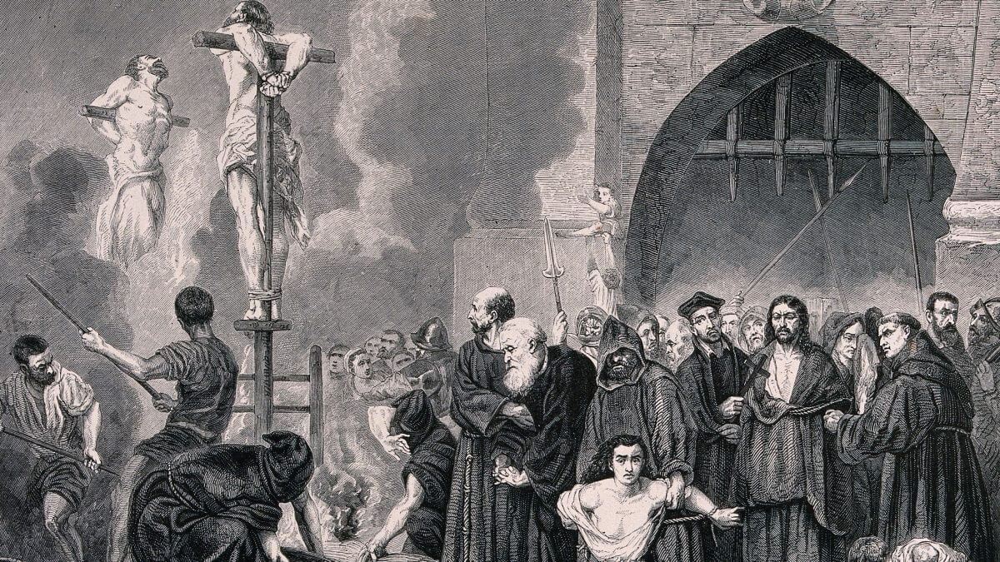
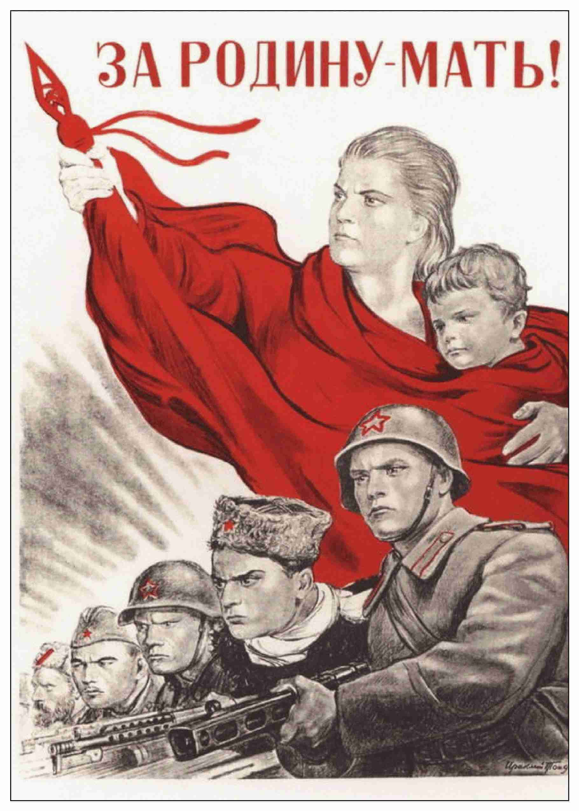
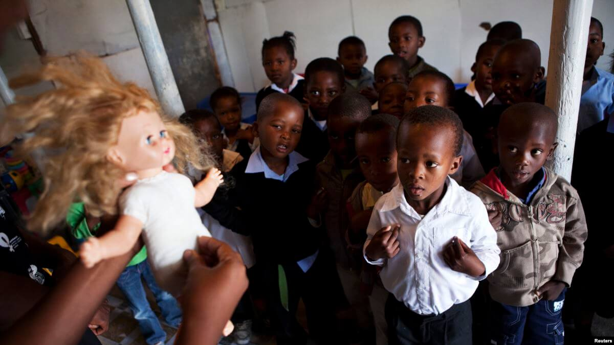
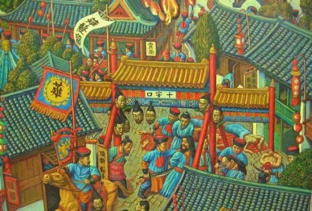
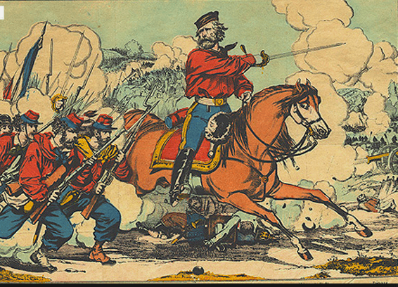

一句话概括——汉族是民族，中华民族是快要破产的“国族”（即国家力量构建的“民族”）。
而华夏族是汉族的前身，这里不多讲了，重要的是辨析汉族和所谓“中华民族”的概念，也就是辨析民族和国族的概念。
（此篇回答极有可能被政治敏感，请读者随手复制保存，谢谢！）
目录：
1.定义
2.引言-知乎关于民族常见的两个言论
3.共同体的概念
4.民族是最坚实的共同体
5.民族的延续性和不易改变性
6.民族认同VS阶级认同
7.民族的发明
8.国家与国族
9.中华民族-濒临破产的国族
我先给出定义：
民族的定义
民族——是一个拥有同一语言，同种文化，相似样貌（血缘），相同认同的共同体。
国族——由国家力量按国籍重新构建的暂时性“民族”，如果语言文化样貌相近，国族内个体权利相同，有成功晋升为“真正的民族”的可能性。如果语言文化样貌差太多，或者个体权利不同，则会构建失败，最后分崩离析。
引言-知乎关于民族常见的两个言论
今天网络上聊起民族，尤其是汉族，经常出现的论调是“汉族是混血民族，所以汉族不存在”和“民族都是想象的共同体，所以民族不存在”。这两句话都是非常可笑的。
关于“汉族混血民族，所以汉族不存在”这句话，他的前提已经被现代分子生物学所证伪（比如复旦大学生物科学院。研究成果可自行搜索）——汉族恰恰是世界上血统最纯的大民族。简直是打了汉族虚无主义者和逆民的脸。
不过我今天要说的关键点不是这个。继续看，假设，某族确实是混血民族，那么“某族不存在”就成立吗？中国有很多少数民族是混血民族，或建国后划分出来的“人造民族”，吐鲁番的维吾尔族和喀什的维吾尔族人种完全不同；土家族里大多数是汉人改的，也有少部分原本的土家族；云南彝族和凉山彝族压根是两个民族捏合成的。那难道这些民族不存在吗？显然不是。他们自己认为自己属于某族，他们的共同体内也会接纳他们为某族，这就是所谓民族认同感。
接下来说到“民族都是想象的共同体，所以民族不存在”这句话。讲真，这个前半句“民族是想象的共同体”不算错，认同感正是“想象的共同体”的表现方式。但是，但是，但是，重要的事情说三遍，人们在说这句话来消解民族的时候，从来不谈阶级是不是想象的共同体？宗教是不是想象的共同体？这么一比较读者就会发现——所谓“民族是想象的共同体”正是某些人为了消解民族意识（尤其是消解汉族的民族意识，毕竟这种话他们并不敢对“少数民族同胞”说）所采用的话术。如果民族是想象的共同体所以不存在，阶级这种一生中经常变换的身份，岂不是更“想象”，岂不是更“不存在”？宗教这种大部分建立在意识领域的共同体，岂不是更“想象”？更不存在？
有人说民族是民族国家出现后的产物，这个说法和“牛顿出生之前天体运动不遵循万有引力”一样荒谬。在古希腊，伊索克拉底说希腊人有非常接近的文化和血缘，号召希腊人团结起来抗击波斯。柏拉图更是认为希腊人之间的战争只是内讧，中国古代也有朴素的民族主义。民族的存在本就是最大的“自古以来”，民族正是最真实的共同体。
为了正本清源，我们先来辨析共同体的概念。
共同体的概念
人生来就是社会的动物。从来没有抽象的单独的个人，只有历史的社会的人。每一个人都使用先人创造的文字，流传祖先的血脉，生活在社会之中。在社会中，生产、交换、文娱等活动才能实现。只有生活在社会之内，人才能过上优良的生活。
人生下来的时候就会主动寻求群体的慰藉，正如孩子会寻求母亲的庇护，子女寻求家庭的温暖一样。原始人会亲近他的血亲和部落，现代人见面的时候也会询问对方的家乡。若属于同一群体，就会觉得亲切；不属于同一群体，就会觉得疏远。这是人类的天性。
这些群体是怎么来的呢？为什么不同的人会“认为”我们同属于一个群体呢？
群体存在的基础是群体里面的每个个体，都“认为”自己是群体里的一员。也就是说，在意识中建立了自己与这一群体之间的联系。这种意识上的联系，就叫做“认同感”。“群体”实际上是建立在个体的“认同感”之上的。有一个概念常常被用来描述这种关系——就是“想象的共同体”。民族是想象的共同体，阶级是想象的共同体，宗教是作用在个人意识领域的，当然更是想象的共同体。
然而，单单有个人对群体的“认同感”，只是第一步。接下来至关重要的一步是——群体里的其他成员也接纳这个个体作为共同体的一员。一个腰缠万贯的老板可以当“精神无产阶级”，但是工人们未必接纳他；一个黑人可以当精神汉人，但是汉人们未必接纳他。就算这一代汉人勉强接纳了，他们的子辈也未必接纳这位黑人的子女为“汉人”。这里就涉及到语言，文化，和样貌（血脉）这一类客观因素了。
到这里可以总结一下，“想象的共同体”的建立需要两个条件：一是个体的主观自由意志，二是该群体其他人的接纳。两者缺一不可。从这个角度来说，所有的群体都是“想象的共同体”。没有一个“不可违抗，先天存在”的客观标准或者超然存在，来命令某人必须属于某个共同体——他自己既无法反抗，其他群体中的成员也无法拒绝，他必定属于这个群体——这种“群体”在现实中实际上是不存在的。所有概念就都是人类社会后天建构的，特别是政治学/社会学概念。民族/阶级这些概念就像人类制造的工具。工具本身是不存在的，也没有什么意义，但当人们创造并使用它们时，也就有了工具的意义。
民族是最坚实的共同体
既然民族/宗教/阶级等等都是“想象的共同体”，那他们在程度上有没有区别呢？我认为是有的。民族这个共同体，至少对比宗教/阶级这二者而言，“想象”的成分要少一些，“真实”的成分要多一些。然而，今天流行的观点是谈到民族时会强调其是“想象的共同体”，谈到阶级/宗教时却觉得他们是先天存在的，不容置喙的，这显然是彻头彻尾的双重标准。
先说宗教。比如天主教，设想一个中国的天主教徒小王，他既会对遥远的中东教友们受到的迫害感到难过，也会对历史上基督教从一个以色列的小宗教发展到今天的庞大势力这一历程感到欣慰，更会对历史上做出贡献的神学家们感到钦佩。这就是小王对基督教的“认同感”的体现。
然而，如果我们解构一下。虽然同为基督徒，但是小王所信奉的基督教，与历史上曾经存在的基督教，是一回事儿吗？历史上的基督教长期鄙视女性，对异教徒绝不宽容，宗教战争充满血腥与残酷。而今天的天主教却接受了梵蒂冈的宽容主义和多元化，包容开放，温情脉脉。若这位天主教徒穿越回去，怕是会被以“异端罪”为名处死。同样的，那些4世纪的基督徒也不会认为今天的基督徒是真正的基督徒。
现代基督徒所信奉的宗教和历史上的基督教似乎不是一个宗教，小王和那些历史上的神学家的趣味/信仰/立场也大不相同，那小王是如何做到认为自己与历史上的基督教神学家有相同的信仰呢？同理，中东的那些教友们和小王或许有着不同的职业和阶级，他们语言不通，阶级和地位各异，信奉的也属于不同的教派。为何小王可以与这些中东的教友有同理心，对他们的处境和际遇感同身受呢？更关键的问题是，小王到底配不配，应当不应当对历史上的“教友”（他自以为是教友）的际遇感同身受呢？

可不可以这样说——“因为‘基督徒’的认同是一个想象的产物，因为历史上各个阶段的基督徒彼此之间差别很大，因为今天的基督徒们彼此之间差别也很大，所以今天的基督徒不能称之为一个群体，不能有群体意识，不能抱团为自己发声，也不能争取宗教自由。因为今天的基督教同历史上的基督教千差万别，所以我们要认为“现代基督教诞生于1962/1869/1550/1054/325年，而不是公元0年”。这种说法可以成立吗？
显然是不行的。
因为现代的基督徒们有了“我们基督徒是一个信仰共同体”的信念，他们“认为”彼此之间是教友，那他们就是一个群体。当他们不再“认为”他们是一个群体的时候，基督教徒才停止作为一个群体而存在。当谈到历史的时候，因为他们“认为”自己和历史上的基督徒们共享一个信仰，是一个宗教的信徒，那么他们就和历史上的基督徒们共享一个信仰。历史上的基督教是不断延续，不断演变到今天的，从未断代。今天的教徒们的老师们自认为是基督徒，教出了新一代教徒。老师的老师把信仰传承给了他们，这正是对他们“认同感”的一个佐证。现在世界上没有第二批人声称自己是基督徒，和他们抢这个身份认同，他们是世界上独一无二的自称“基督徒”的群体。这算是他们“认同”的另一个佐证。
既然我开头提到群体的认同需要两个因素。一个是自身的认同，另一个是群体内部他人的认同。那么理论上来说，证明“今天的基督徒”和“历史上的基督徒”属于同一信仰的最好办法是让他们回到过去，让历史上的基督徒对今天的基督徒的信仰投票加以肯定，这是最理想的办法。既然我们做不到这些，那么“历史上延续至今”“认同从未断代”，就是最好的证明方法。
用同样的标准来探讨民族认同，我们就会发现很多流行的观念就会不攻自破。比如一个说法是——“汉族是49年是划分的，这之前不存在汉族”——这显然是扯淡。另一种说法是“汉人内部千差万别所以群体不存在”，读者也会自己发现其可笑之处了——基督徒内部千差万别，无产阶级内部千差万别，这个“千差万别”难道影响了他们的认同？
还有一些说法更有欺骗性，如“民族是近代西方的思想产物，近代以前不存在民族”，这就跟“牛顿力学是17世纪发现的，所以之前物体在宏观低速领域的运动不遵循力学三定律”一样可笑。朴素的民族思想古已有之，民族主义思想也是不断变化的。拿“今天的民族主义和古代的不一样”来试图说明不应该有民族主义的，就跟拿“今天的基督教和古代的不一样”来试图说服基督徒放弃信仰一样可笑。
回过头来说民族认同。一个人属于某个民族，这是生下来就决定好的，几乎永远不会发生变化。这是因为民族有着多样且明确的外在指标作为边界和壁垒，这些指标使得共同体的第二个标准——“共同体内其他人对个体的接纳”能够轻易达成。即，通过对这些指标的判定，民族共同体内的其他人能轻易就“某人是否可以被接纳入本民族”产生共识，而非模棱两可或产生矛盾。这些指标就是语言，文化，和样貌（血脉）。
我们拿汉人举例子。汉人不仅符合“历史上延续至今”“民族认同从未改变”，更获得了现代分子生物学的支持——汉族的基因高度相似，与古时候相比几乎没有明显变化。大多数现代汉人正是古代汉人的直系后代。这一点更能说明汉民族成功延续至今，其牢固的边界远远强于许多“人造民族”。另外汉族还有一些特殊性，如语言文字：汉语，在世界的语言文字体系中，是独树一帜的，自成一体的。与其他民族的语言有着天然的边界和隔离，这更塑造了汉族这一古老和独特的民族。这也是很多汉人到欧美国家后觉得“难以融入”的根本原因。
民族的边界可以“硬”到什么程度？我们可以拿阶级认同来做对比。众所周知，阶级认同的标准是“是否占有生产资料”。按这个标准，一位农民，占有土地和牲畜作为生产资料，显然他是资产阶级。然后他选择进城务工，做了典型的无产阶级——工人，那么他的一生将在资产阶级和无产阶级中多次切换，“阶级划分法”对他几乎没有意义。再比如，是否占有生产资料这个标准本身的单一和不明确，就为阶级划分带来很多麻烦。一名名牌大学的白领，眼界宽广，月入3万，但他不占有生产资料，是被剥削的无产阶级；一位辛辛苦苦劳作种地的老农民，疲于奔命，年入1万，但他因为占有生产资料，居然是小资产阶级（你也配当无产阶级？……）试问这种划分科学吗？由此可见，阶级认同真是一种定义不明，而又经常变化的东西。
再比如，一位十平米小卖部的店主，雇佣了自己的亲友看店，因为他通过雇佣关系盈利，所以是资本家。而另一位大企业的职业经理人，年入百万，因为他是被雇佣者，也不占有生产资料，倒成了无产阶级了，应该革前者的命，真是奇哉怪哉！一个人的教育水平/行业/地区/收入显然都比“生产资料”更能诠释他的社会属性。
再举一个历史上的例子，抗日战争的时候，面对日本帝国主义的侵略，“代表大资本家和大地主”的国民党和“代表无产阶级”的共产党联手抗日，毛泽东认为，在抗日战争时期，民族矛盾是第一位的，阶级斗争必须服从民族斗争。抗战爆发以后，民族矛盾上升为主要矛盾，阶级矛盾下降为次要矛盾。平时阶级斗争喊得响，一遇到真正的考验，就捡起民族矛盾的大旗。苏联也一样，这边杀地主富农杀得爽，结果遇到卫国战争存亡之际，就把垃圾堆里的拿破仑战争的沙俄将军们请出来贡上了，一边高喊“俄罗斯母亲”。所以说阶级认同和民族认同，到底哪个才是根本认同呢？

回过头来看民族，语言/文化/样貌几大要素，非常清晰，也非常明确。我将在下一节讲解这几个要素具体是如何发挥作用，影响民族认同，进而影响整个民族的构建的。
民族的延续性和不易改变性
民族的特征就在于他的延续性/不易改变性/排他性。
何谓延续性？就是民族的认同总是代代相传的，“自然延续”的。比如我是汉人，我认为自己是汉人；我所处的社会认为我的长相和他们没什么区别；我说汉语，能在汉人的圈子里完全融入。我的孩子在正常情况下也会遗传我的长相，生活习惯以及语言。那么我的孩子如果不出什么意外，也会被认同是汉人。除非，他的肤色因为基因变异产生了变化，让他一眼看上去就不像汉人，或者他生活习惯突然完全和西方人相同了，再或者他不会说汉语，然后再加上他自己选择不再当汉人，这时候他才会从汉人群体中脱离。
一个很有意思的问题是，如果他自己不认为自己是汉人呢？即“客观条件”没有变化，自己的主观认同感却发生了变化，这种情况如何分析呢？这就要考量个体是否属于群体的另一个标准了——群体中的其他个体是否接纳该个体。
这个情况非常普遍，现代中国是一个盛产“自恨者”的地方，身为汉人却歧视汉人，认为汉人天生劣等，急于摆脱汉人共同体。按我开头的定义，当他不认为自己是汉人的时候，他就不是汉人了——只要其他汉人也普遍开除他的民族身份。我们假定我的孩子不认为自己是汉人，并做出了伤天害理的行为（比如把核弹卖给了日本人），以至于被大多数汉人开除了民族身份，那么现在他确实成功地“不是汉人”了。问题是他的下一代如何？如果他没有成功的找到一个日本女孩并让自己的孩子长得“像一个日本人”，若他的妻子是一个汉人并生在中国的话，我们会发现一个很有趣的事实——这个孩子只要还“认为”自己是汉人，说汉语，生活习惯同其他人相同，不信伊斯兰教，且社会的其他成员也认为他是汉人，他仍然可以以一个汉人的身份在这个社会生活下去。即使民族认同在某一代断掉了，在下一代也能接上。这就是民族的延续性。这种延续性其实也是建立在一些外在条件的“难以改变”上的（在这个例子上是血缘外貌的难以改变）。
何谓民族的难以改变性？举一个简单的例子。换国籍现在越来越简单了，一个美国黑人把自己的国籍变成英国并不难。但他的民族要从“非裔美国人”换成“WASP”（白种美国人）就极其困难了，近乎不可能。就算他熟练掌握了英语（这不难），生活习惯完全和白人相同（这在全球化的今天也不难了），他的样貌也决定了他永远无法“成为白人”。这就是民族的难以改变性。既然他无法“成为白人”，他就会被白人本能的排斥，并客观上不能成为同一个民族的成员，属于同一个群体。
这就要说回上一节说提到的语言/文化/样貌几大要素了。正是这每个人的这几样要素很难同时改变，甚至改变某一项都很困难，民族属性才难以改变。语言/文化/样貌给民族共同塑造了巨大的牢固的刚性边界。而漠视这些边界，强行把相同民族的人群拆成不同民族，或把不同民族的人捏成一个民族，都会带来巨大而深远的灾难。
举个例子：法国的二战黑人老兵。外籍军团的黑人老兵们，非常认同自身法国人身份，法国人也愿意忽略他们的肤色种族因素，把他们吸纳入高卢民族，打造了一种“大家都是法国人”的美好景象。刚开始的确很美好，然而到他们的下一代，问题开始产生了。黑人的孩子们发现，在学校里他们是那么的格格不入，跟同龄白人小孩玩不到一起去。久而久之，自然产生了隔阂。法国黑人开始认为自己和白人不一样，是少数族裔，需要少数族裔的特权。今天法国种族问题的根源，实际就是那时候种下的。

聪明的知友可能已经发现，造成上述问题的根源正是肤色或曰“血缘”的难以改变（这里血缘实际上更多的是通过外貌起作用的）。认同感是可以改变的，而语言/文化/样貌确不可能经常变动。认同很难延续到下一代下下一代，语言/文化/样貌却能世代相传。这就是民族的客观标准，符合这些标准的人不一定认为自己属于某个民族，但客观上符合这些标准的人更容易认为自己属于某民族，或者说，他们或他们的后代“迟早”会属于某个民族。
上面举例说明的是血缘（外貌）作为标准的重要性。我再举几个例子来说明其他标准同样如此。韩国差点被日本皇民化，正是因为日语教育的普及，韩国人差点丧失民族语言，丢掉民族认同，踩到了亡国灭种的边缘；与之相对，德裔美国人中帮美国作战的远多于帮德国作战的，正说明在外貌相近的情况下语言对于民族认同的重要性；犹太人最终得以重建以色列国，靠得是宗教文化和生活习惯（犹太教及相关习俗）固化下来的根深蒂固的犹太民族认同。由此可见语言/文化/样貌的区别，确实是民族的客观标准和边界。
正如我开头所说，民族本质上是群体的一种，在群体中人类在相像的人中找到慰藉，若某人和自己“不像”，那慰藉就找不到，这个群体客观上就被撕裂了。如果一个群体中某人与群体格格不入，那么这个人就实际上不是这个群体中的一员。
所以我对民族的定义就是，一个拥有同一语言，同种文化，相似样貌，相同认同的共同体。
民族认同VS阶级认同
与之相对，从“是否容易改变”的角度来讲，今天流行的阶级认同是非常不堪一击的。现代社会（其实古代也是）充满了阶级流动。今天的一个工厂的熟练工人，明天可能转型成快递员，十年后就可能积攒了一些小本钱会老家开了个小店，这种例子比比皆是，你让他咋认同“无产阶级”啊？人家想做有产者啊，很可能人家本来就是在农村有房有地的有产者啊，阶级认同到底在哪儿？
贫富差距和阶级矛盾之所以不是根本矛盾，就是因为有可转换性，而且边缘地段模糊，没有不可逾越的鸿沟。比如我是个中产阶级，我月收入1万，但我也随时可能跌落到无产地步。我是个大企业MBA高管，经济危机了我也有可能失业。所以不同阶级是可以转换的，在这种情况下虽然我是富人和中产，我仍然赞同让社会更公平，福利更高，生活更有保障，因为我随时有可能阶级跌落，我的亲戚朋友恋人孩子也有可能是比我更低的阶级。法国大革命的时候小贵族比资产阶级都热衷于革君主的命，所以阶级共同体根本不可能长期维持。
但民族不同。民族鸿沟显著，民族身份难以转化。所以民族才是最根本的共同体。全球化的今天国籍转换更容易了，“国族”更不靠谱了。本民族内阶级也可以转化，所以本民族内无产阶级一直和资产阶级一同嘲笑他民族无产阶级。美国红脖子不仅不在乎汉人无产阶级，还巴不得汉人无产阶级悲惨。因为他们不可能转化为汉人无产阶级，却可以转化成美国资产阶级，这充分说明了民族才是共同体。
在高风险投资里，或者正常地竞争但因现金流破裂而破产，一个富人很可能失去财产变穷人，一个“反动”的资产阶级可以一下子切换成无产阶级身份，变得赞同“革命”。但民族切换不了，一个祖上对法国无比认同的黑人士兵的孩子，长大了还是黑皮肤，和白人玩不到一起去。这么一对比，立刻就说明了什么共同体才是真的。
凡是能切换身份的群体都不长久，国籍可以换，穷人可以变富人，天主教徒自称是新教徒就可以混进新教徒人群里。但是在全球化的今天，只有你的肤色和语言是难以改变的，这就是民族共同体坚实的边界。
本民族内的阶级虽然可以互相转化，但阶级矛盾也确实是存在的。那么面对民族内的阶级矛盾，应该怎么做呢？这里有一个很典型的例子——共和制时代罗马。当时平民和贵族两个阶层斗争非常激烈，平民甚至一度想出走罗马。最后在外部敌人的压力下，贵族妥协了，同意给平民三个保民官的位子，然后罗马平民和贵族一起征服其他意大利山地部落/ 拉丁城邦/高卢人。完全没看到这些势力的平民们有任何建立跨民族阶级同盟的迹象，反而是在阶级之间矛盾调和以后去针对其他民族。这充分说明了阶级矛盾的确小于民族矛盾。当然举这个例子不是说我们要扩张，以国内的生育率，所谓扩张和霸权是天方夜谭。
我们要做的，是在本民族内部，通过充分地赋予每一个民族内的个体以平等的权力和权利，通过良好的自组织与民间监督制衡，来改善贫富差距，促进阶级流动，避免民族内部的撕裂，建立本民族内部平等的共同体。现在汉民族内部被奴役，汉人无权，在国内当低等人，户籍政策还导致汉人内部也四分五裂，共同体内部的撕裂，这才是真正的危机所在，也是亟待解决的问题。
民族的发明——利益共同体
根据上面这个定义，实际上我们可以推导出民族的最后一个特征——排他性。正因为民族是个拥有同一语言，同种文化，相似样貌，相同认同的共同体，所以一个人只能认为自己属于一个民族。一个民族的某人迁徙到另一个民族的聚居区的时候，理应不能轻而易举的被另一个民族的人直接“同化”，轻易把自己当作当地民族的人，否则正说明这两个民族之间没有硬性的边界，是强行分开的，若有机会，很容易重新融合成一个民族。
实际上，类似的这种看似“不同”实际相同的民族随处可见，根本原因是同一民族的不同地区的个体，自身利益关系不同，形成了不同的利益共同体，从而组成了不同国家。两个群体的不同个体享有不同权利和权力，就产生了新的民族认同。举例来说，尼德兰（现荷兰比利时卢森堡）是一个整体，尼德兰人是一个民族。然而因为尼德兰北部（荷兰）经济利益和南部（比利时）不大一致，再加上英国处于自身国家利益不想让荷兰独吞整个比利时，就让比利时独立了。这就产生了一个新民族，“说荷兰语的比利时人”，也就是弗拉芒人。这就是利益共同体的不同撕裂民族的典型例子。
然而这种基于利益不同产生的新“民族”也是脆弱的。让一位弗拉芒人去荷兰生活，他的语言文化外貌都与荷兰人相近，很快就能成功融入。弗拉芒人在荷兰并没有那种能让人“在人群中一眼就能发现不同”的特征，这样的民族边界是一触即破的。如果时过境迁，环境发生变化，利益关系不同的两个民族是有可能重新归于一个真正的民族的。
这种“脆弱”的新民族，如果是以国家意志构建的，就是一种“国族”。我接下来会详细论述
国家与国族
我们民族主义者总是被人误解，其中误解最深的就是认为我们是一群高喊爱国，无脑效忠国家和君主的人。既然今天特别需要把所谓的爱国主义和真正的民族主义区分开来，就必须彻底的讨论国家的本质是什么。
本质上来说，“国家”是政权和暴力的产物。
什么是国家？政治学家们给出了很多定义，但在我看来，所谓国家的本质无非是由某个政府管理下的人群。先有政府（或者说“统治”这一行为）才有国家。匈奴是一个国家，汉朝是一个国家。汉朝中央政府崩溃以后，从形式上和实质上都独立的东吴当然是一个国家，打着中央政府旗号行使权力的曹操治下同样是一个国家。几个部落自发合作建立的国家是国家，外来蛮族武力征服本地土著建立的国家也是国家。国家就是这样一种冰冷，中性的东西。
有些国家是以民族之名建立的，他们的政府是民族共同体的公民们为了保护自己的利益和其他民族对抗而选举产生的，对他们负责，受他们监督。然后这个政府和他的公民们建立了国家。换句话说，先有民族，才有政府，然后才有国家，这就是民族国家。
这种国家从长远和现实来看都值得忠诚，忠于国家即是忠于民族。然而这种国家毕竟是少数，大部分国家的建立并非是基于民族的共同体，大部分国家的建立是靠纯粹的暴力。一个军阀，如果掌握了一支军队，征服了一个民族或者民族的一部分，有了一帮听命于他的官僚，他也可以宣称这是他的国家。然后这个国家靠统治者或者统治集团的魅力和手腕维系，手下统治者各个利益共同体，民族的/阶级的/宗教的等等等等。

有些国家是出于宗教，穆罕默德的伊斯兰国就是由他和他的信徒们用刀剑和诈骗征服了阿拉伯半岛以后建立的；有些国家是出于意识形态，比如美国人自以为是自由主义者和普世主义一神教信徒的家园；还有些国家自诩是阶级的共同体，比如苏联就宣称他们是全体无产阶级的祖国。
理论上来说，任何群体，或者说任何共同体都可以建立一个国家。可以是最坚实的共同体——民族，也可以是文化（或者说文化圈），可以是宗教，可以是阶级，也可以纯粹是一伙拥有武力的帮派或者军阀。并非是政府标榜我是XX阶级/民族/宗教的代表，他就真“代表”这个共同体的利益，但是这里为了方便，姑且不考虑“声称”和实际的关系，就认为政府们就是他们宣称的“代表”即可。
当国家形成以后，因为国家会给公民们以部分公民权，公民们作为国家的一员实际上成为了一个新的共同体。而某些治下的“被统治者”，奴隶，非公民也能享受到一些好处。所以最后国家成员就会凭借着这些利益形成一个利益共同体。例如满洲八旗的国家中，如果说满人是公民，汉八旗是二等公民，包衣不过是奴隶罢了。但因为在满洲八旗这个国家中，包衣们可以在劫掠中获得利益，所以包衣们会对满洲八旗这个国家产生一种认同感，这就是“爱国主义”的产生。
从这个角度来说，一个国家不应该谋求统治非本共同体内部的成员，至少不应该给他们公民权。例如如果一个国家是基于宗教这个共同体建立的，那么它征服了异教徒以后，就应该争取把异教徒变成本宗教的成员，或者把异教徒消灭，再或者把异教徒们变成奴隶作为给本宗教信徒们的奖励。但实际上来说，因为统治者或者政府往往自成一体，缺乏来自基本盘的政治反制，往往会倾向于“背叛”他们所代表的共同体，这时候情况就会发生逆转。
一个典型例子——中世纪的伊斯兰帝国以传教作为核心目的，按道理说应该尽力鼓励被征服者皈依。然而阿拉伯国家的君主在中世纪因为痴迷于被征服者缴纳的人头税，而在让被征服者皈依上设置门槛，尽量防止他们皈依。又或者因为国家本身就是征服的产物，统治者所代表的共同体相比于被统治者们数量是极少数，所以要秉持相互制衡，秉持“拉一派打一派”的策略引入一些新的被统治者作为平衡统治的需求。比如罗马皇帝不代表罗马公民，只代表他们自己的军事集团统治罗马帝国。为了防止公民们造反威胁他们的统治，他们热衷于引进日耳曼野蛮人来制衡罗马人，这就是另一个例子。无论如何，当一个国家引入了本民族共同体以外的人并给与了他们部分权力的时候，一个新的共同体——国家或称国族就产生了。
有些人津津乐道于宣称民族是想象的共同体，先有国家和政府的宣传才有民族，这是公然对历史的嘲笑。
我们都知道历史上意大利的统一是如何进行的：在意大利统一前意大利有数个公国和王国，事后统一意大利的萨伏伊王朝此时此刻正在意大利西北一隅。是先有了意大利统一的呼声，意大利民族觉醒了，加里波第才能争取到意大利民族主义者的支持，建立“红杉军”。在意大利民族主义者的箪食壶浆中，发动千人远征消灭那不勒斯王国，然后把政权交给了萨伏伊王朝，建立了统一的意大利王国。试问如果“民族是政府构造的产物，意大利人的认同本不存在，是萨伏伊王朝统一意大利以后为了便于统治强加于意大利人的虚假骗局”。那萨伏伊王朝是如何在偏居西北一隅的情况下，让意大利人自愿接受“意大利民族”的存在，接受“意大利应该统一”的理念，实现意大利统一的呢？难道加里波第有脑控术？如果民族意识本不存在，加里波第为何能在南意大利被这么多从未被萨伏伊王朝统治的意大利人的支持下，靠千人远征征服一个王国？难道这些意大利人是被萨伏伊王朝派出的探子或者意识形态煽动家洗脑了？

只有承认民族先于国家存在，才能解释意大利的统一是怎么回事。只有最疯狂的疯子——往往是一些自以为可以操纵全社会，用政府的暴力和强制力给一个个活生生的人的脑子中强行种下某种意识形态，扭转民族认同建立大同天国的人士，才相信民族是可以被国家人为创造。
不同于其他的群体靠认同来维系，作为国家的群体由政府的权力——或者说暴力背书。因为国家为他们治下的成员提供公民权，所以国家这个共同体的成员对国家的认同往往是非常强的。没有政府，没有国家，就没有公民权。在现代全球秩序和经济全球化以前的年代，“我是某国人”，或者说“我是某国公民”的认同往往高于其他一切认同。国家也喜欢把自己打扮成一个民族的代表，宣称他们治下的公民都属于一个民族——无论他们是不是真正的属于一个民族。这种人造的民族称之为国族。看到这里我们也明白了，“中华民族”也是这样的一种国族。
再举个例子，法国也是个典型。法国人宣称法兰西公民都是高卢人，无论他是白的黑的还是黄的，那么这个“高卢人”就是法国的国族了。如果政府开始如此宣称——“这个国族就是民族！”，那么官办的“民族主义”，也就是所谓的“国族主义”就诞生了。
这里插一句话，实际上所谓真正的“想象的共同体”是国族，而且想象程度还非常高。用对一个国家和政权的效忠，跳过天然存在和自发认同的民族进行，编造“大家同属于一个民族”的谎言的国家，倒是时时刻刻面临破产。奥匈帝国就是个例子。在德意志与意大利统一以后，统治着德意志人，捷克人，波兰人，南斯拉夫人的哈布斯堡家族被民族主义吓破了胆，君主们无师自通的已经开始自发的“构建民族”了。奥匈帝国的皇帝们声称实际上帝国的臣民都是一个民族，是一个“审美民族”。他们天真的以为只要“宣称”他们是一个民族了，他们就真是一个民族了。然而无论帝国的学校和知识分子如何灌输这种官办的“民族主义”，最后在一战战场上各个民族的臣民照样语言不通，在战后照样毫不犹豫的宣布了民族自决。这充分证明了“官办民族主义”是很难行得通的。
有些人认为，奥匈帝国的失败不过是因为语言不通的产物。他们认为只要奥匈帝国厉行同化，让全体公民都会说一种语言，民族的隔阂就不存在了。或者更进一步，强迫用政府教育灌输来让全体公民自发的接受一套生活习惯或者意识形态，奥匈帝国就不会存在民族问题了。
这种国族主义，集大成者就是美国。美国人自称他们无论是黑人白人还是黄种人，都属于美利坚民族，至少几十年前是这样。那时候美国还在推行大熔炉政策而，以各种肤色的美国人都是“美国人”而自豪，自以为可以同化全世界的人，把不同文化背景的移民都变成美利坚民族。诚然，至少在十年以前，大部分美国人都会说英语，没有奥匈帝国语言不通的问题。美国人的生活习惯在全球化的今天在快速的接近，也没有语言习惯的隔阂。然而，美国人现在之所以把“大熔炉”的政策转变为大拼盘，正是因为“美利坚民族”已经不存在。在今天的美国社会中，无论美国人如何掩耳盗铃的高呼“USA，USA！”，美国黑人，美国拉丁裔，亚裔美国人，以及美国白人都不再认为对方是“自己人”。美国正在产生四个不同的民族，每个民族彼此之间有不同的圈子，不同的认同，不同的意识形态和不同的投票对象，以及最后一步，重新产生不同的语言。美国拉丁裔正在越发的以说西班牙语为荣而不愿意说英语——即使他们熟练掌握英语。以真正的民族认同为代表的“身份政治”正在美国蔓延。特朗普的出现正是证明了美利坚民族早就不复存在，强制捏合的国族不过是一个可笑的肥皂泡——一个早就该破坏的肥皂泡。
中华民族-濒临破产的国族
中华民族，其实就是中华人民共和国身份证持有者。
普京是俄罗斯人，俄罗斯族也是中华民族，求解——为何不是中华民族？真正的答案：普京不是中华人民共和国公民。
金正日是朝鲜族，朝鲜族也是中华民族，求解——金正日为何不是中华民族？真正的答案：金正日不是中华人民共和国公民。
你会发现中华民族这个概念解构到最后，其实就等于中华人民共和国身份证持有者，就是国家的同义词罢了，就是彻彻底底的“国族”。现在知道为什么小粉红喜欢说“出国了就不算中国人”了吧？因为他们没有民族的概念，只有国家的概念，他们是国家主义者，这就是原因。
我说中华民族濒临破产，有人会觉得危言耸听，其实完全不是。前述几个例子是因为国族之内有着巨大的语言和肤色差距，“中华民族”之内这类差距其实还不算大。但是，“中华民族”的构建被认为得加上了巨大的 Debuff——共同体内利益不一致，这对国族的构建是灾难性的。
-试问，两位中考/高考/公务员考试的考生，其中一人A发现另一人B能凭他的民族身份凭空获得20分的加分，请问A会觉得“我和B同属于一个中华民族”吗？
-试问，一位烈士子女C在考试的时候发现，他与杀害他父亲的恐怖分子的儿子D仅仅享受相同的加分，同时D的加分能遗传给下一代，而C自己的却不能，请问C会觉得“我和D同属于一个中华民族”吗？
-试问，一位妈妈E生了二胎，被计|生|委处以高额罚款，她和她丈夫的事业前途全都被影响，她看着她的邻居， F，生了六胎，然后拿到了国家的奖励生育基金。请问E会觉得“我和F同属于一个中华民族”吗？
-试问，一位牛肉店老板G，发现自己的竞争对手H能凭民族身份拿到每月2000的牛羊肉补贴，自己在价格竞争中完全处于劣势，几乎倒贴钱，请问G会觉得“我和H同属于一个中华民族”吗？
-试问，一位在某自治区的汉族学生I，发现他常常被某族学生J欺负，然而当他试图还击之后却马上被找家长，说他“破坏民族团结”。请问I会觉得“我和H同属于一个中华民族”吗？
同样的逻辑可以反过来——
-B也不会觉得自己和A同属“中华民族”，因为A明显是低等人，哼，不屑；
-D也不会觉得自己和C同属“中华民族”，因为C“牺牲了爸爸”才换来不如自己的优待，哼，冷笑；
-F也不会觉得自己和E同属“中华民族”，因为E明显属于“连生育都需要被计划的家畜”，而自己是越多生越多赚的高级物种，哼，自得；
-H也不会觉得自己和G同属“中华民族”，因为G显然是自己不费力就能打败的手下败将，哼，嫌弃；
-J也不会觉得自己和I同属“中华民族”，因为I显然是被欺负也不敢反抗的弱者，哼，费拉不堪。
一个共同体内却不共享相同的利益，一个共同体内却支离破碎以至于如此地步。
试问，到底谁才是真正的“想象的共同体”呢？
其实对于认为国家大于民族的人，一句话就能让他们闭嘴——我是生在伪满洲国的汉人，我要爱什么国？爱满洲国？
倒是我们的民族——汉族，才是真正坚实的共同体，千百年来未断绝的汉人认同，统一的语言统一的文字，相似的长相相似的祖源基因，还有同样的文化。这才是实实在在的，不容解构的，值得我们每一个汉人去维护的共同体。而像城乡二元化以及户籍制度这种撕裂我们民族“统一利益”的制度，则是我们要反对的。
民族是真实的，效忠于自己的民族共同体是天经地义的，出卖自己民族的利益去讨好异族，才是时刻值得警惕。
（全文完，请随手复制保存，谢谢！）